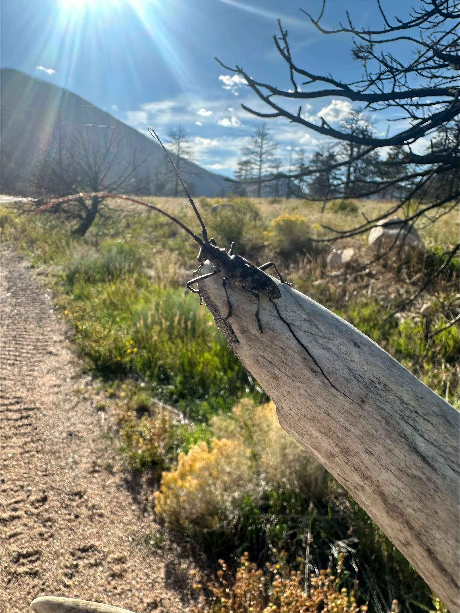
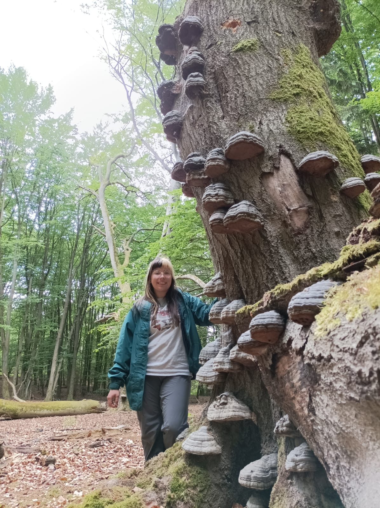
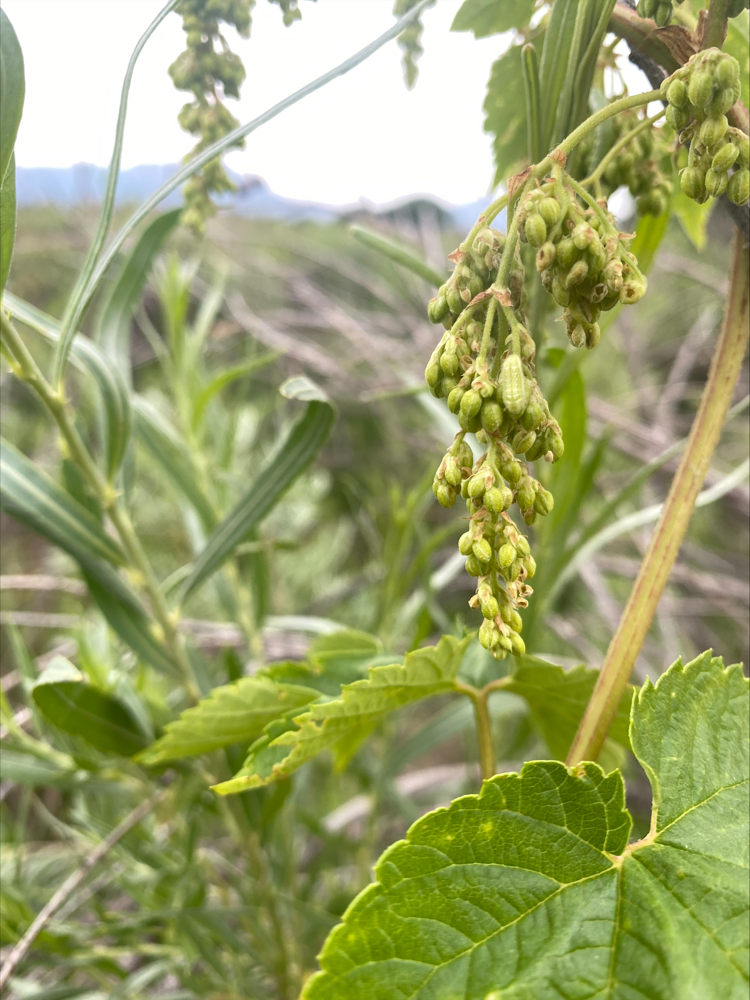
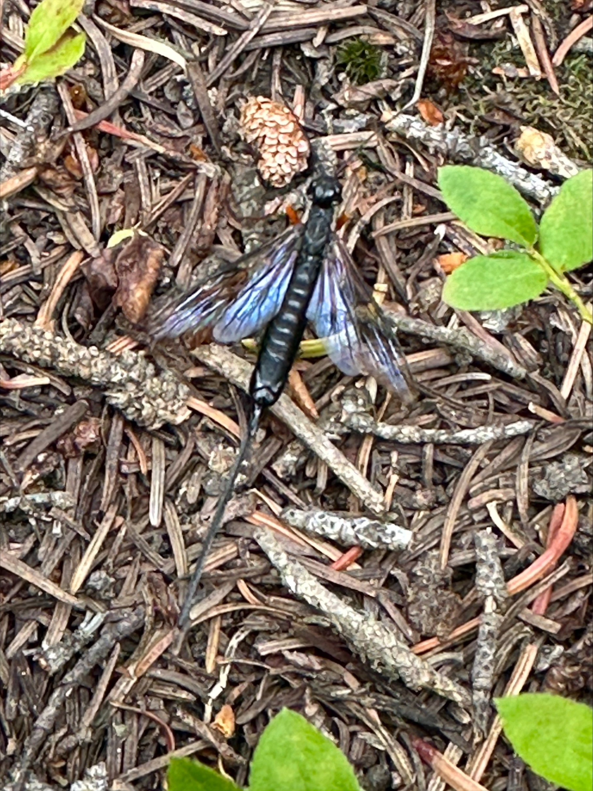
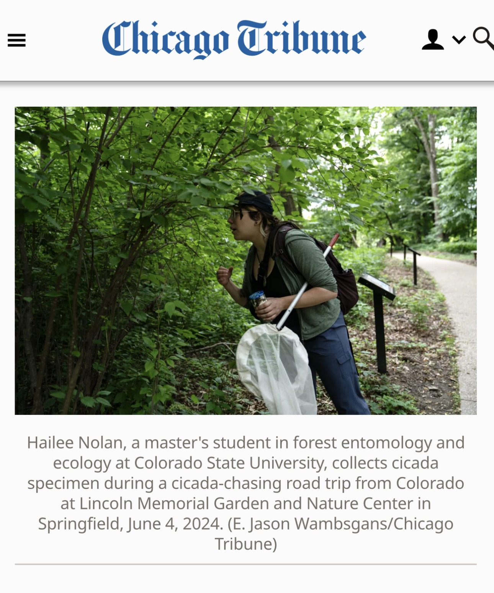

Gallery
A selection of photos from research projects, conferences, field seasons, and time outdoors.
Presentations

SACNAS conference, Puerto Rico- Serving as a peer mentor

Presenting at Western Forest Insect Work Conference (WFIWC), Santa Fe

My MURALS student research team!
Monochamus Research

Monochamus trap (Synergy Semiochemicals) deployed in the Poudre Canyon

Building traps with Zylah (Guanella Pass)

Monochamus clamator

Field site in Cameron Pass

Biking to off-road sites with Zylah

Monochamus scutellatus

Lunch break

Field site in St. Vrain canyon
Germany Research

DAAD RISE intern group and advisors (Germany)

Field site with a tree covered in hoof fungus

Benjamin deploying a flight interception trap

Benjamin climbing for canopy sampling

Clay caterpillars used for predation experiment

Flowers from a hike in Germany
Hops Azure Research

Celastrina ant tending poster presentation by Dr. Emily Mooney at Entomological Society of America, 2021

Hops blue (Celastrina) larvae on hops flowers

Celastrina larvae collected using beat sheet
Foraging & Wildlife from Fieldwork

Part of my personal insect collection!

foraged raspberries at Cameron Pass field site

Zylah and I at Picnic Rock

Amanita muscaria (Cameron Pass)

Ichneumonid wasp (Guanella Pass)

Zylah with wildflowers after a field day

Crow (Guanella Pass)

Moose (Guanella Pass)

Guanella Pass

Bighorn sheep (Guanella Pass)
Hiking & Collecting Trips

Restoration ecology class field day

Cicada collecting trip (Illinois)

Chicago Tribute feature documenting cicada collecting

Sumak Kawsay In Situ Research Station (Ecuador)

Hiking in Bogota, Colombia

Hiking in Brasov Romania

Backpacking at Havasupai- Mooney Falls

Backpacking at Havasu Falls